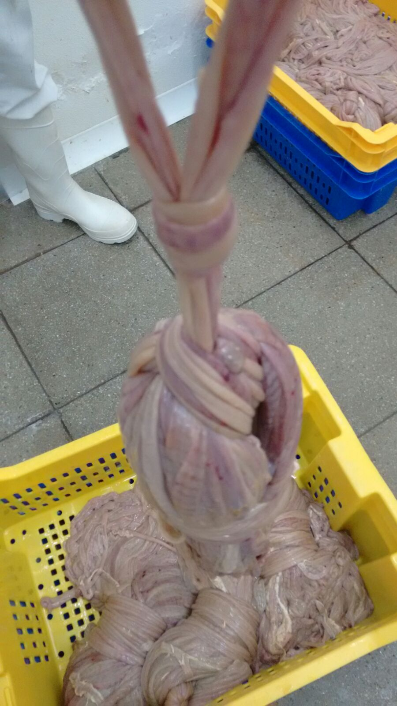

Tripas Naturales
Tripas de origen animal y colágeno de la más alta calidad para la elaboración de embutidos tradicionales y gourmet. Seleccionadas y procesadas bajo estrictos controles de calidad.
 Ovino
Ovino
Tripa de Ovino (Cordero)
Tripa natural de cordero, ideal para salchichas tipo Frankfurt, vienesas, chipolatas y snacks cárnicos. Ofrece un calibre fino y delicado, perfecto para embutidos gourmet y de alta presentación.

PorcinoTripa de Porcino (Cerdo)
La tripa de cerdo es la más versátil y popular para chorizos, longanizas, salchichas parrilleras, butifarra y salamis. Su resistencia y elasticidad la hacen ideal para embutidos tradicionales y de alto consumo.
Tripa de Colágeno
Tripa comestible de colágeno, alternativa práctica a las tripas naturales. Ofrece uniformidad en calibre, mayor vida útil y facilidad de uso. Ideal para producción industrial de salchichas y embutidos cocidos.
Aplicaciones de Tripas Naturales
- Salchichas tipo Frankfurt
- Chorizos y longanizas
- Salchichas parrilleras
- Butifarra y salami
- Embutidos gourmet
- Snacks cárnicos